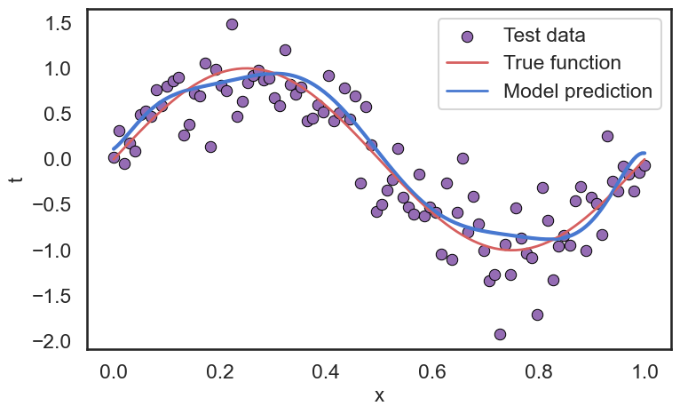
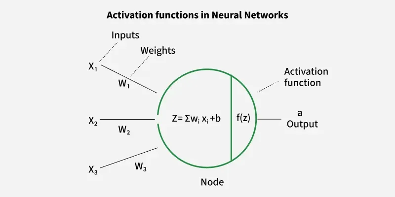

Chapter 01: Introduction to the Deep Learning
Chapter 01主要介绍了什么是Deep Learning，为什么我们要学习Deep Learning 的原因。通过几个实际的例子，说明了Deep Learning 在各个领域的应用。最后通过一个简单的Polynomial Regression 例子，介绍了Deep Learning 模型训练的基本流程以及相关的概念。 接下来让我们具体看一下本章的内容。
1 What is Deep Learning?
深度学习（Deep Learning）是机器学习（Machine Learning）一个子领域，主要关注使用多层神经网络(MLP)来建模和解决复杂的问题。深度学习通过模拟人脑的神经元结构，能够自动从大量数据中提取特征，并进行预测和分类。
相信能找到这里的同学们，都是对AI有一定接触的。现在AI已经渗透到了我们生活的方方面面，自从2022年11月ChatGPT发布以来，AI的热度更是达到了前所未有的高度。各种AI工具层出不穷，AI生成内容（AIGC）也成为了一个热门话题。我们可以看到，AI已经在文本生成、图像生成、语音识别、自然语言处理等多个领域展现出了强大的能力。有很多人认为 (Bubeck et al. 2023) ，AI有可能在未来几年内实现通用人工智能（AGI）。无论如何，AI的发展已经深刻地影响了我们的生活和工作方式。好好的了解AI，尤其是深度学习的基本原理和应用，对于我们每个人来说都是非常重要的。
The central claim of our work is that GPT-4 attains a form of general intelligence, indeed showing sparks of artificial general intelligence. Sparks of Artificial General Intelligence: Early Experiments with GPT-4, p.92
说了这么多的深度学习的好处，那么深度学习到底是个什么东西呢？
一句话来说就是
深度学习是一种基于叫做神经网络的计算模型，能够自动从数据中学习特征表示，并进行预测和决策。
书中提到了
Deep learning is based on computational models called neural networks which were originally inspired by mechanisms of learning and information processing in the human brain. Deep Learning Foundations and Concepts, p.1
好的，这很抽象，我们先不管这些名词，接下来我们先看看深度学习是怎么应用的，然后再回过头来理解这句话的含义。
1.1 Applications of Deep Learning
深度学习已经在多个领域展现出了强大的能力，书中举了4个经典的例子：
- Medical diagnosis： 通过训练一个Neural Network模型来分析医学影像数据，从而实现对疾病的自动诊断和预测。
- Protein structure： 通过深度学习模型来预测蛋白质的三维结构，从而加速新药的研发和生物学研究。
- Image synthesis： 通过深度学习技术生成高质量的图像，用于艺术创作、游戏开发等领域。
- Large language models（LLM）： 通过训练大规模的神经网络模型，实现对自然语言的理解和生成，现在的ChatGPT就是基于LLM，并在此基础上进行其他训练得到的。
具体的例子内容在这里就不展开了，有兴趣的同学可以参考书中的内容。在这里整理一下这些例子的相同点与不同点，并且由此总结一下常见的深度学习的任务类型：
1.1.1 Classification vs. Regression
上面提到的Medical diagnosis和Large language models都是属于Classification任务： 给定输入数据，模型需要预测其所属的类别标签。例如，Medical diagnosis中模型需要判断患者是否患有某种疾病，Large language models中模型需要预测下一个单词的类别。与其相对的，Regression任务则是预测一个连续的数值。例如，预测房价、股票价格等。
Classification和Regression是监督学习（Supervised Learning）中最常见的两种任务类型。而监督学习是指模型在训练过程中需要使用带有标签的数据进行学习，从而使模型能够对新数据进行预测。比如对于Medical diagnosis任务，训练数据中每个医学影像都对应一个疾病标签，我们有训练数据 \(\mathcal{D}\{(\mathbf{x}_1, y_1), (\mathbf{x}_2, y_2), \ldots, (\mathbf{x}_n, y_n)\}\) 模型通过学习这些标签来进行预测。不过，与Medical diagnosis不同，Large language models的训练数据通常是无标签的文本数据（只是一段段文字），不过我们实际是有标签的（下一个单词是什么），只不过没有显式的表现出来。这种通过构造一种任务（Pre-text task）来进行训练的方式，称为自监督学习（Self-Supervised Learning），也是监督学习的一种形式。
1.1.2 Generative vs. Discriminative Models
要论现在最火的深度学习模型，非生成式AI（Generative AI）莫属。ChatGPT、Midjourney等都是生成式模型的典型代表。生成式模型的目标是学习数据的分布，从而能够生成与训练数据相似的新数据。例如，给定一段文本，生成式语言模型可以生成与之相关的文本内容；给定一张图像，生成式图像模型可以生成与之相似的图像。与之相对的，判别式模型（Discriminative Models）则是直接学习输入数据与标签之间的映射关系，从而进行分类或回归任务。例如，Medical diagnosis, Protein structure等任务通常使用判别式模型进行预测。
1.1.3 Learning vs. Inference
深度学习模型的训练过程通常分为两个阶段：学习（Learning）和推断（Inference）。学习阶段是指模型通过训练数据进行参数优化，从而使模型能够更好地拟合数据分布。推断阶段则是指模型在训练完成后，对新数据进行预测或生成的过程。学习阶段通常需要大量的计算资源和时间，而推断阶段则相对较快，适合实时应用。这本书的后续章节主要介绍学习阶段的内容，包括模型的构建、损失函数的设计、优化算法等。而推断阶段则相对简单，主要涉及模型的部署和应用。
1.1.4 Fine-tuning vs. From Scratch
在实际应用中，深度学习模型的训练通常有两种方式：从头开始训练（From Scratch）和微调（Fine-tuning）。从头开始训练是指模型的参数全部随机初始化，然后通过训练数据进行优化。这种方式通常需要大量的训练数据和计算资源。微调则是指在一个预训练模型的基础上，使用特定任务的数据对模型进行进一步的训练，从而使模型更好地适应特定任务。微调通常能够显著提高模型的性能，尤其是在训练数据有限的情况下。其中，Transfer Learning（迁移学习）是一种常见的微调方法，通过将预训练模型的知识迁移到新任务中，从而提高模型的泛化能力。
1.2 Summary of Deep Learning Applications
通过上面的几个例子，我们初步了解了深度学习在各个领域的应用，以及常见的任务类型和训练方式。深度学习作为一种强大的机器学习方法，已经在医疗诊断、蛋白质结构预测、图像合成和自然语言处理等多个领域展现出了巨大的潜力。随着计算资源的提升和数据量的增加，深度学习有望在未来继续推动人工智能的发展，带来更多创新和变革。不理解这些的同学也不用担心，等待后续章节的学习，你会对这些概念有更深入的理解。
2 A Simple Example: Polynomial Regression
为了更好地理解深度学习的基本原理和训练流程，书中通过一个简单的Polynomial Regression例子来说明。Polynomial Regression是一种回归分析方法，用于建模输入变量与输出变量之间的非线性关系。下面我们通过这个例子来了解深度学习模型的构建、训练和评估过程。
2.1 Datasets
在这个例子中，我们使用一个简单的合成数据集。假设我们有一个输入变量 \(x\)，其取值范围为 \([0, 1]\)，输出变量 \(t\) 与输入变量之间的关系为一个二次多项式函数，并且添加了一些随机噪声。具体来说，数据集中的每个样本 \((x_i, t_i)\) 满足以下关系：
\[ t_i= \sin(2 \pi x_i) + \epsilon_i, \quad \epsilon_i \sim \mathcal{N}(0, 0.1) \]
其中，\(\epsilon_i\) 是服从均值为0，方差为0.1的高斯噪声。我们生成了100个样本作为训练数据集，另外生成了50个样本作为测试数据集。
从这个构造的训练数据中，我们可以看到现实世界中的训练数据的构建：
- 数据通常是带有噪声的，模型需要学会从噪声中提取有用的信息。
- 我们的训练目标是希望模型可以在没有见过的测试数据上也有良好的表现。这就是所谓的泛化能力（Generalization）。
从而我们构建出了训练数据集 \(\mathcal{D}_{train}=\{(x_1, t_1), (x_2, t_2), \ldots, (x_{10}, t_{10})\}\) 和测试数据集 \(\mathcal{D}_{test}=\{(x_1, t_1), (x_2, t_2), \ldots, (x_{50}, t_{50})\}\)。
2.2 Model
有了数据集\(\mathcal{D}_{train}\)之后，接下来我们需要构建一个深度学习模型。模型是许多研究的核心内容，在这里我们使用一个简单的Linear Model来进行Polynomial Regression。具体来说，我们使用一个二次多项式模型来拟合数据：
\[ y(x, \mathbf{w}) = w_0 + w_1 x + w_2 x^2 + \ldots + w_M x^M = \sum_{j=0}^{M} w_j x^j \]
其中，\(\mathbf{w} = [w_0, w_1, \ldots, w_M]^T\) 是模型的参数向量，\(M\) 是多项式的阶数。在这个例子中，我们选择 \(M=9\)，即使用一个9次多项式模型来拟合数据。
虽然这个模型是一个多项式模型，但它仍然被称为线性模型（Linear Model），因为它在参数 \(\mathbf{w}\) 上是线性的。也就是说，模型的输出 \(y(x, \mathbf{w})\) 是参数 \(\mathbf{w}\) 的线性组合，而不是输入变量 \(x\) 的线性组合。这种线性性质使得模型的训练和优化更加简单和高效。
2.3 Loss Function & Optimization
有了模型之后，接下来我们需要定义一个损失函数（Loss Function）来衡量模型的预测结果与真实标签之间的差距。在这里，我们使用Sum of Squared Errors (SSE) 作为损失函数，定义如下：
\[ E(\mathbf{w}) = \frac{1}{2} \sum_{i=1}^{N} (y(x_i, \mathbf{w}) - t_i)^2 \]
其中，\(N\) 是训练数据集中的样本数量，\(y(x_i, \mathbf{w})\) 是模型对输入 \(x_i\) 的预测结果，\(t_i\) 是对应的真实标签。损失函数 \(E(\mathbf{w})\) 衡量了模型在训练数据集上的表现，目标是通过调整参数 \(\mathbf{w}\) 来最小化损失函数，从而使模型能够更好地拟合数据。\(\frac{1}{2}\) 是为了在后续计算梯度时更加方便。
我们希望通过最小化损失函数 \(E(\mathbf{w})\)，使得模型的预测结果尽可能接近真实标签，从而提高模型的泛化能力。我们知道 \(E(\mathbf{w})\) 是 \(\mathbf{w}\) 的函数，因此我们可以通过优化算法来调整参数 \(\mathbf{w}\)，使得损失函数达到最小值。在这个简单的例子中，我们可以使用解析解（Analytical Solution）来直接计算出最优参数 \(\mathbf{w}^*\)，因为损失函数是一个关于 \(\mathbf{w}\) 的二次函数，具有唯一的全局最小值（高中知识， 二次函数的图像是一个抛物线，取其导数为0的点 ）。具体来说，最优参数 \(\mathbf{w}^*\) 可以通过以下公式计算得到： \[ \mathbf{w}^* = (\Phi^T \Phi)^{-1} \Phi^T \mathbf{t} \]
， 但在现实中 通常会使用数值优化方法（如梯度下降）来进行参数优化。
2.4 Model Complexity & Model Selection
接下来，我们看看这个模型在测试集 \(\mathcal{D}_{test}\) 上的表现。我们可以计算模型在测试集上的均方误差（Mean Squared Error, MSE）来评估模型的泛化能力： \[ \text{MSE} = \frac{1}{N_{test}} \sum_{i=1}^{N_{test}} (y(x_i, \mathbf{w}^*) - t_i)^2 \] 其中，\(N_{test}\) 是测试数据集中的样本数量，\(y(x_i, \mathbf{w}^*)\) 是模型对输入 \(x_i\) 的预测结果，\(t_i\) 是对应的真实标签。通过计算MSE，我们可以评估模型在未见过的数据上的表现，从而判断模型的泛化能力。
Make accurate predictions on previously unseen inputs is a key goal in machine learning and is known as generalization. Deep Learning Foundations and Concepts, p.6
Train Set:
SSE of Train Set: 0.0000
RMSE of Train Set: 0.0000
Test Set:
SSE of Test Set: 9.0839
RMSE of Test Set: 0.4262 我们可以看到，模型在训练集上的表现非常好，几乎没有误差（SSE和RMSE都接近于0）。但是在测试集上的表现就差很多了，SSE达到了9.0839，RMSE也达到了0.4262。这说明模型在训练数据上过拟合（Overfitting）了，无法很好地泛化到未见过的数据上。这就是模型复杂度（Model Complexity）和模型选择（Model Selection）的问题。
我们可以看出，这个模型对于我们的训练数据来说，过于的复杂，导致模型在训练数据上表现很好，但在测试数据上表现很差。对于复杂的模型，其中一个方法就是增加训练数据的数量

在这个例子中，我们使用了一个9次多项式模型来拟合数据，这个模型的复杂度较高，容易导致过拟合。为了提高模型的泛化能力，我们可以考虑使用更简单的模型（如低阶多项式）或者引入正则化（Regularization）来控制模型的复杂度。
2.4.1 Regularization
我们可以看看 \(\mathbf{w}\) 的值：
| w0 | w1 | w2 | w3 | w4 | w5 | w6 | w7 | w8 | w9 |
|---|---|---|---|---|---|---|---|---|---|
| 0.113824 | 4.405167 | 94.162776 | -1514.731222 | 9498.903764 | -31346.008432 | 58321.808397 | -61525.006624 | 34368.919801 | -7902.500007 |
可以看到，模型的参数变化非常大，这也是过拟合的一个表现。模型相当于“定制”了训练数据中的噪声，从而导致在测试数据上的表现很差。为了缓解过拟合问题，我们可以引入正则化项（Regularization Term）来控制模型的复杂度。常见的正则化方法有L2正则化（Ridge Regression）和L1正则化（Lasso Regression）。以L2正则化为例，我们可以将损失函数修改为： \[ E_{reg}(\mathbf{w}) = \frac{1}{2} \sum_{i=1}^{N} (y(x_i, \mathbf{w}) - t_i)^2 + \frac{\lambda}{2} \sum_{j=0}^{M} w_j^2 \]
| w0 | w1 | w2 | w3 | w4 | w5 | w6 | w7 | w8 | w9 |
|---|---|---|---|---|---|---|---|---|---|
| 0.607766 | 3.463379 | -11.168293 | -1.675222 | 3.747767 | 4.911149 | 3.725974 | 1.447197 | -1.24926 | -4.015138 |
可以看到，引入正则化项后，模型的参数变得更加平滑，变化范围也变小了。这有助于提高模型的泛化能力，减少过拟合的风险。
但是要选择合适的正则化参数 \(\lambda\) 也是一个挑战。过大的 \(\lambda\) 会导致模型欠拟合（Underfitting），而过小的 \(\lambda\) 则无法有效地控制模型复杂度。因此，我们需要通过交叉验证（Cross Validation）等方法来选择合适的正则化参数，从而提高模型的泛化能力。
当我们取的到合适的正则化参数 \(\lambda\) 后，我们可以看到模型在测试集上的表现有了显著的提升：
2.4.2 Cross Validation
想这种选择 \(M\) 和 \(\lambda\) 的过程，我们称之为模型选择（Model Selection）。模型选择的目标是找到一个既能很好地拟合训练数据，又能在测试数据上表现良好的模型。常见的模型选择方法有交叉验证（Cross Validation）、信息准则（Information Criteria）等。
在这里我们介绍最常见的Cross Validation。Cross Validation是一种评估模型泛化能力的方法，通过将训练数据划分为多个子集，依次使用其中一个子集作为验证集，其他子集作为训练集，来评估模型在未见过的数据上的表现。通过多次重复这个过程，我们可以得到模型在不同验证集上的平均表现，从而更准确地评估模型的泛化能力。

显然，Cross Validation 可以帮助我们更好地选择模型的复杂度参数 \(M\) 和正则化参数 \(\lambda\)，从而提高模型的泛化能力。当它也存在一个明显的缺点，就是计算开销较大：对于每一组参数组合，我们都需要进行多次训练和评估，这对于大规模数据集和复杂模型来说，可能会非常耗时。因此在实际应用中，我们通常根据经验和先验知识来缩小参数搜索空间，从而减少计算开销。
这就是为什么，好多人称深度学习是一个实验性很强的领域。因为很多模型的超参数（Hyper-parameters）是需要通过实验来调优的。大家都把这个过程叫做炼丹，因为这个过程就像炼丹一样，需要不断地试验和调整，才能找到最优的配方。
2.5 Model Training Summary
通过这个简单的Polynomial Regression例子，我们了解了深度学习模型的整个过程：
- 构建数据集：收集和准备训练数据和测试数据。
- 定义模型：选择合适的模型结构和参数。合适的模型结构能够更好地捕捉数据的特征，从而提高模型的表现。
- 定义损失函数：选择合适的损失函数来衡量模型的表现。
- 优化模型参数：使用优化算法来调整模型参数，使损失函数最小化。
- 评估模型表现：使用测试数据来评估模型的泛化能力。
万变不离其宗，深度学习的核心就是通过构建合适的模型和优化算法，从数据中学习有用的特征表示，从而实现对复杂任务的解决。哪怕是现在的LLM模型，其实也是遵循这个基本流程，只不过模型结构更加复杂，优化算法更加先进，数据量也更加庞大罢了。
3 History of Deep Learning
俗话说，“以史为鉴，可以知兴替”，了解深度学习的发展历史，有助于我们更好地理解其现状和未来趋势。下面我们简要回顾一下深度学习的发展历程。 现代的神经网络是基于 1943 年提出的人工神经元模型（Artificial Neural Network, ANN）。在
1943 年，Warren McCulloch 和 Walter Pitts 提出了第一个人工神经元模型（Artificial Neural Network），标志着神经网络研究的开始。

其中，w是权重（weight），b是偏置（bias），f是激活函数（activation function），z叫做pre-activation, output a 也叫做activation。
ANN的提出，为后续的神经网络研究奠定了基础。1958年，Frank Rosenblatt 提出了感知机（Perceptron）模型，这是第一个能够进行二分类任务的神经网络模型。感知机通过调整权重和偏置来学习输入数据与输出标签之间的关系，展示了神经网络在模式识别中的潜力。
Many of these models describe the properties of a single neuron by forming a linear combination of the outputs of other neurons, which is then transformed using a nonlinear function. Deep Learning Foundations and Concepts, p.16
3.1 Preceptron
感知机（Perceptron）是由Frank Rosenblatt在1958年提出的一种简单的神经网络模型。它是最早的神经网络之一，主要用于二分类任务。感知机的基本结构包括输入层、权重、偏置和激活函数。其工作原理如下：
- 输入层：感知机接收多个输入信号，每个输入信号对应一个权重。
- 权重和偏置：每个输入信号乘以对应的权重，然后将所有加权输入信号相加，再加上一个偏置项。
- 激活函数：将加权和通过一个激活函数（通常是阶跃函数），如果结果大于某个阈值，则输出1，否则输出0。
- 学习过程：感知机通过调整权重和偏置来最小化预测结果与真实标签之间的误差，从而学习输入数据与输出标签之间的关系。
其中激活函数通常使用阶跃函数（Step Function）： \[ f(z) = \begin{cases} 1, & \text{if } z \geq 0 \\ 0, & \text{if } z < 0 \end{cases} \]
感知机的提出展示了神经网络在模式识别中的潜力，然而它也存在一些局限性。例如，单层感知机只能解决线性可分的问题，无法处理非线性问题。为了解决这个问题，研究人员引入了多层感知机（Multi-Layer Perceptron, MLP），通过增加隐藏层来提高模型的表达能力。
3.2 Feed Forward Neural Networks
Preceptron的局限性促使研究人员探索更复杂的神经网络结构。1986年，Rumelhart等人提出了反向传播算法（Backpropagation），使得多层神经网络的训练成为可能。主要的变化包括：
- 引入Differential Calculus，使得我们可以计算损失函数对于每个参数的梯度。
- 应用了Gradient-Based Optimization 方法（如 Stochastic Gradient Descent, SGD），通过梯度下降来更新模型参数，从而最小化损失函数。
- 使用了非线性激活函数（如Sigmoid, ReLU），使得神经网络能够捕捉复杂的非线性关系。
这些改进使得多层神经网络能够更好地拟合复杂的数据分布，推动了神经网络研究的发展。
3.3 Deep Neural Networks
随着计算能力的提升和大规模数据集的出现，深度神经网络（Deep Neural Networks, DNNs）在21世纪初得到了广泛关注。2006年，Hinton等人提出了深度置信网络（Deep Belief Networks, DBNs），通过无监督预训练来初始化深度神经网络的参数，从而缓解了梯度消失问题。随后，卷积神经网络（Convolutional Neural Networks, CNNs）在图像识别任务中取得了突破性进展，特别是2012年AlexNet在ImageNet竞赛中的胜利，标志着深度学习的崛起。其基本的概念与FFNN类似，只不过引入了卷积层（Convolutional Layer）和池化层（Pooling Layer），从而更好地处理图像数据。
随着深度学习的发展，不同的技术的提出，比如Auto-Differentiation 等，使得训练深度神经网络变得更加高效和便捷。由此也催生出了许多不同的模型架构，如循环神经网络（Recurrent Neural Networks, RNNs），Transformer于处理序列数据，生成对抗网络（Generative Adversarial Networks, GANs）用于生成任务等。
可以看到，人工智能的成功不是一蹴而就的，而是经历了多个阶段的发展和积累。每一个重要的突破都离不开前人的努力和创新。通过了解深度学习的发展历史，我们可以更好地理解其现状和未来趋势，为进一步的学习和研究打下坚实的基础。
4 Summary
我非常推荐阅读这篇文章 Deep Learning(LeCun, Bengio, and Hinton 2015), 这篇文章对Deep Learning有一个非常好的总结。 通过本章的学习，我们初步了解了深度学习的基本概念、应用领域以及模型训练的基本步骤。深度学习作为一种强大的机器学习方法，已经在医疗诊断、蛋白质结构预测、图像合成和自然语言处理等多个领域展现出了巨大的潜力。随着计算资源的提升和数据量的增加，深度学习有望在未来继续推动人工智能的发展，带来更多创新和变革。在后续章节中，我们将深入探讨深度学习的核心技术和方法，帮助读者更好地理解和应用这一重要领域。